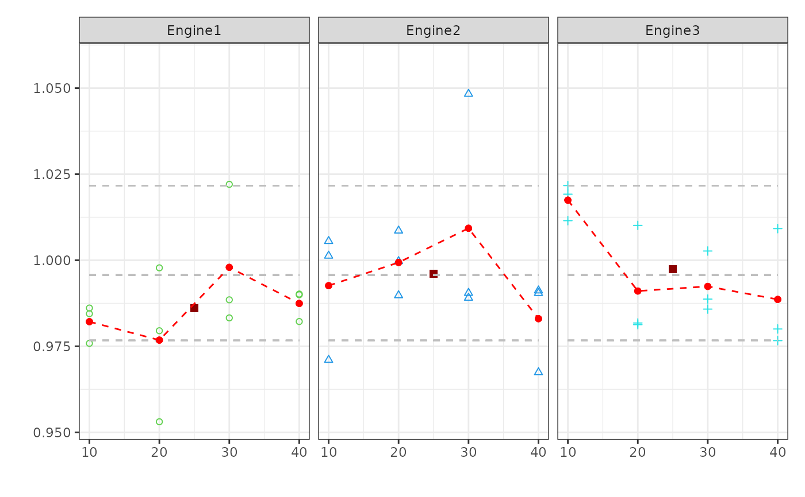

Creates a plot for visualizing the relationships between a response variable and multiple factors.
Usage
mvPlot(
response,
fac1,
fac2,
fac3,
fac4,
sort = TRUE,
col,
pch,
labels = FALSE,
quantile = TRUE,
FUN = NA
)Arguments
- response
The values of the
responsein a vector.response must be declared.- fac1
Vector providing factor 1 as shown in the example.
fac1must be declared.- fac2
Vector providing factor 1 as shown in the example.
fac2must be declared.- fac3
Optional vector providing factor 3 as shown in the example.
- fac4
Optional vector providing factor 4 as shown in the example.
- sort
Logical value indicating whether the sequence of the factors given by
fac1-fac4should be reordered to minimize the space needed to visualize the Multi-Vari-Chart. By defaultsortis set to `TRUE`.- col
Graphical parameter. Vector containing numerical values or character strings giving the colors for the different factors. By default
colstarts with the value `3` and is continued as needed.- pch
Graphical parameter. Vector containing numerical values or single characters giving plotting points for the different factors. See
pointsfor possible values and their interpretation. Note that only integers and single-character strings can be set as a graphics parameter (and notNAnorNULL). By defaultpchstarts with the value `1` and is continued as needed.- labels
Logical value indicating whether the single points should be labels with the row-number of the
data.frameinvisibly returned by the functionmvPlot. By defaultlabelsis set to `FALSE`.- quantile
A logical value indicating whether the quanitiles (0.00135, 0.5 & 0.99865) should be visualized for the single groups. By default
quantileis set to `TRUE`.- FUN
An optional function to be used for calculation of
responsefor unique settings of the factors e.g. themean. By defaultFUNis set to `NA` and therfore omitted.
Value
mvPlot returns an invisible list cointaining: a data.frame in which all plotted points are listed and the final plot. The option labels can be used to plot the row-numbers at the single points and to ease the identification.
Examples
#Example I
examp1 = expand.grid(c("Engine1","Engine2","Engine3"),c(10,20,30,40))
examp1 = as.data.frame(rbind(examp1, examp1, examp1))
examp1 = cbind(examp1, rnorm(36, 1, 0.02))
names(examp1) = c("factor1", "factor2", "response")
mvPlot(response = examp1[,3], fac1 = examp1[,2],fac2 = examp1[,1],sort=FALSE,FUN=mean)
